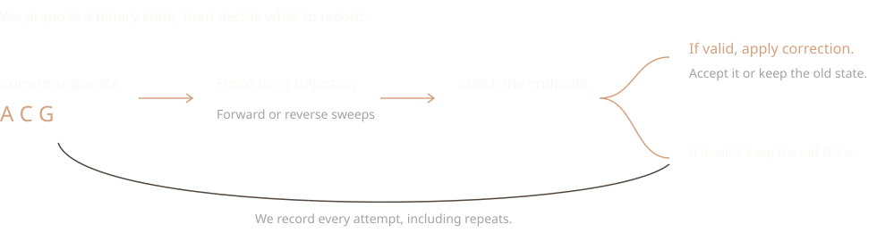

The sampling method
We propose a change, then check it.
Once the sequence is encoded, we run a short Ising trajectory to propose a new binary state.

We use a Metropolis–Hastings correction to keep valid proposals consistent with the protein distribution.
If the endpoint is invalid, we keep the old sequence and record it again instead of drawing a replacement.